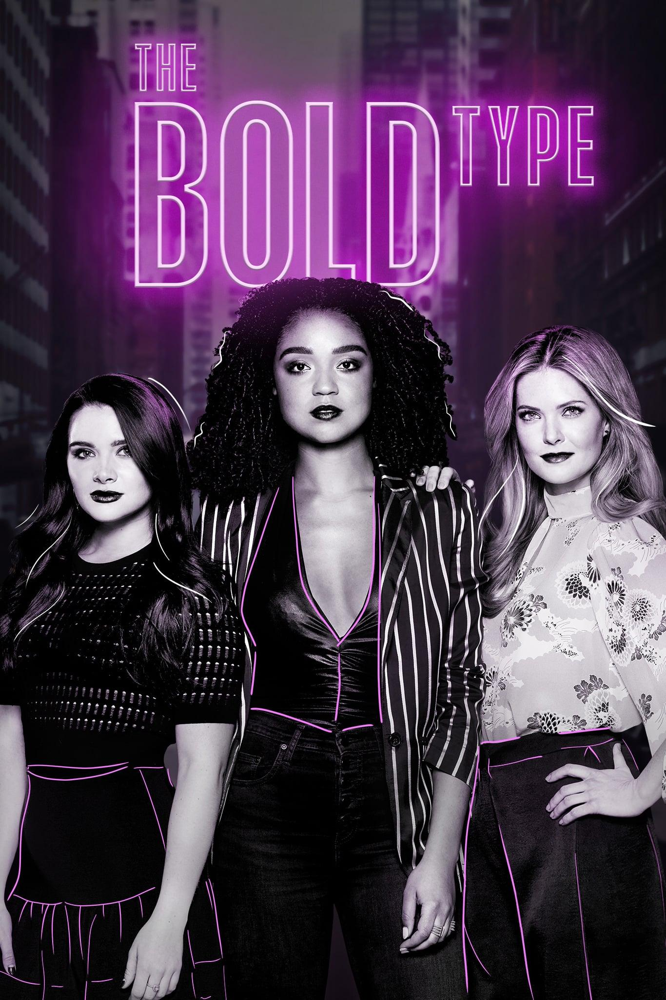

The Bold Type
1/10
It’s homophobic that we had to wait until the 4th episode for it to get gay. Why the fuck did Kat have to get arrested for her to be courageous enough to tell Adena how she feels? So dumb. The writers were probably thinking that it has to be harder for the gay one to be happy. That’s definitely what it seems like. Then, OF COURSE, Kat and Adena have to break up because Kat was being a coward and Adena decided to get back with her ex. This is some bullshit right here. We have to wait until episode 9 now for anything to happen. It’s so easy for the girls who are straight though. Adena and Kat FINALLY get together all the way in the second season. This show is so annoying. Then, Kat won’t go down on Adena? Why did that have to be a conversation? This show just wants to keep creating barriers for the queer character. Perpetuating yet another lesbian stereotype, Kat cheats on Adena. Granted, Adena cheated on her girlfriend with Kat first. They were only together for like 4 episodes! The start of season 3 has Jane and Sutton hooking up with their respective love interests, but Kat is single and heartbroken. They thought they were being so slick with that Paris episode. YOU ARE NOT SLICK! So, you’re telling me that Kat and Tia finally get together after 5 episodes, and Kat hooks up with Adena? This is continuing the stereotype of lesbians cheating. Naturally, things didn’t work out with Adena or Tia. Skip to episode 5 and Kat is back with a guy. This show continues to be homophobic. I’m not going to bother finishing the show. Fuck The Bold Type!